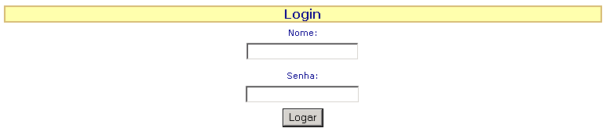

Após a página ter sido criada volte para a definição do projeto clicando no link Projeto da barra de menu do WI Builder. Para configurarmos uma página de login vamos usar as definições da sessão Login seguindo os passos abaixo:
| · | Clique no ícone e depois marque a opção Ativar Login para indicarmos ao WebIntegrator que ele deverá fazer o gerenciamento de login desse projeto.
|
| · | No campo Banco de Dados escolha o banco de dados que será utilizado no login, no nosso caso esse banco de dados é agenda.
|
| · | No campo Página Inicial ou de Login indique qual página do projeto será utilizada, no nosso caso escolha a opção index.
|
| · | No campo SQL deve ser digitado o comando SQL que irá validar o login. O login é considerado válido pelo WebIntegrator quando esse comando retornar algum resultado. Para construirmos o nosso comando SQL de validação siga os passos abaixo utilizando o WIzard SQL ( |
| · | Escolha a tabela usuarios e em seguida selecione todos os seus campos.
|
| · | Na seção Filtros faça com que as colunas usuarios.Login e usuarios.Senha sejam ocultadas da declaração SELECT a ser montada e que também tenham definidas como condição de comparação se elas são iguais a '|tmp.user|' e '|tmp.pass|' respectivamente lembrando de incluir os sinais de apóstrofos.
|
| · | O comando SQL gerado deverá ser algo bem semelhante à SELECT usuarios.Nome FROM usuarios WHERE (usuarios.Login = '|tmp.user|') AND (usuarios.Senha = '|tmp.pass|')
|
| · | Por fim salve a definição do projeto clicando no botão "gravar".
|
Perceba que no comando SQL de validação do login estamos referenciando as variáveis tmp.user e tmp.pass, essas variáveis deverão ser colocadas na sessão através da página de login index. Para a geração da página de login vamos mais uma vez utilizar o WIzard de Páginas, clique em Páginas e em seguida escolha a página index.
Para acessar o WIzard de páginas clique em
Com o esquema de validação de login ativado nenhuma página do projeto poderá ser acessada se o usuário de uma sessão do WebIntegrator não foi efetivamente logado no projeto, nesse caso ele sempre será redirecionado para a página de login definida no projeto. Em alguns casos é conveniente que algumas páginas de um projeto com esquema de validação de login estejam acessíveis publicamente, nesses casos essas páginas devem estar com a opção Acessa sem Login marcada.
Para fazer um teste clique no link Páginas da barra de menu (treeview) do WI Builder, clique na página index e em seguida no ícone
Ao final de todo o processo, se tudo estiver definido corretamente, o exemplo da figura exibida abaixo será extamente como deverá aparecer na tela do seu navegador (brawser).
